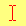
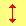

Cursors
Use special classes to set a specified cursor for the element.
About
Added in 4.2.5
Metro 4 contains special classes to set a specified cursor for the element.
These classes have format .c-{cursor-name}
These classes do not contain !important marker.
| Category | Class | Image | Desc |
|---|---|---|---|
| General | .c-auto |
The browser determines the cursor to display based on the current context. E.g. equivalent to text when hovering text. |
|
.c-default |
Default cursor, typically an arrow. | ||
.c-none |
No cursor is rendered. | ||
| Links and task statuses | .c-context-menu |
A context menu is available under the cursor. Only IE 10 and up have implemented this on Windows: баг 258960. |
|
.c-help |
Indicating help is available. | ||
.c-pointer |
E.g. used when hovering over links, typically a hand. | ||
.c-progress |
The program is busy in the background but the user can still interact with the interface (unlike for wait). |
||
.c-wait |
The program is busy (sometimes an hourglass or a watch). | ||
| Selection | .c-cell |
Indicating that cells can be selected. | |
.c-crosshair |
Cross cursor, often used to indicate selection in a bitmap. | ||
.c-text |
 | Indicating text can be selected, typically an I-beam. | |
.c-text-vertical |
Indicating that vertical text can be selected, typically a sideways I-beam. | ||
| Drag & Drop | .c-alias |
Indicating an alias or shortcut is to be created. | |
.c-copy |
Indicating that something can be copied. | ||
.c-move |
The hovered object may be moved. | ||
.c-no-drop |
Cursor showing that a drop is not allowed at the current location. баг 275173 on Windows and Mac OS X, "no-drop is the same as not-allowed". |
||
.c-not-allowed |
Cursor showing that something cannot be done. | ||
| Resizing & scrolling | .c-all-scroll |
Cursor showing that something can be scrolled in any direction (panned). баг 275174 on Windows, "all-scroll is the same as move". |
|
.c-col-resize |
The item/column can be resized horizontally. Often rendered as arrows pointing left and right with a vertical bar separating. | ||
.c-row-resize |
 |
The item/row can be resized vertically. Often rendered as arrows pointing up and down with a horizontal bar separating them. | |
.c-n-resize |
Some edge is to be moved. For example, the se-resize cursor is used when the movement starts from the south-east corner of the box. |
||
.c-e-resize |
|||
.c-s-resize |
|||
.c-w-resize |
|||
.c-ne-resize |
|||
.c-nw-resize |
|||
.c-se-resize |
|||
.c-sw-resize |
|||
.c-ew-resize |
Indicates a bidirectional resize cursor. | ||
.c-ns-resize |
 | ||
.c-nesw-resize |
|||
.c-nwse-resize |
|||
| Zooming | .c-zoom-in |
Indicates that something can be zoomed (magnified) in or out. |
|
.c-zoom-out |
|||
| Capture | .c-grab |
 |
Indicates that something can be grabbed (dragged to be moved). |
.c-grabbing |
<button class="button c-default">Default</button>
<button class="button c-pointer">Pointer</button>
<button class="button c-grab">Grab</button>